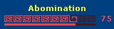

This option allows you to choose this style for the Floating Health window. This style is for use by Necromancers whose life is linked directly to their pet's life. The health bar is linked to the pet's life. The smaller bar beneath the pet's life is linked to the player's health.
Note: Unlike the other styles in this option, this one is an overlay. Select one of the other styles first to pick the Endurance and Power windows style you want. Next select this style to "overlay" this Health window style on top of the previous one selected.
Warning: The adapter for a controlled pet's health is bugged in the game client. It will continue to show your pet's last health level when it was released or died.
